雨天鬧鐘依 Apple 天氣對通勤路線的降雨預報，決定明早幾點叫你；下次鬧鐘幾點響、為什麼，主畫面和鎖定畫面就看得到。
Rainy Clock reads the Apple Weather forecast along your commute and decides when tomorrow's alarm should ring. Your next alarm, and why, is right on your Home Screen and Lock Screen.
在 App Store 下載 Download on the App Store畫面全部是 1.8.1 的實際擷取，沒有合成資料。標示「訂閱或買斷」的功能需要付費方案；其餘免費。
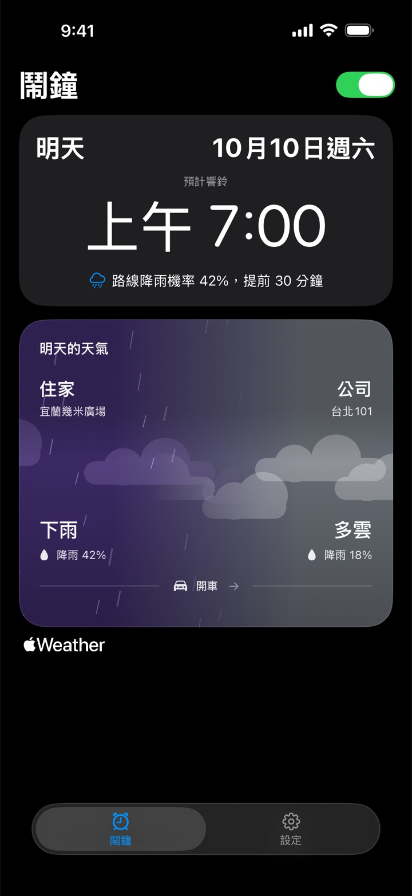
設定住家、公司和平常的起床時間。雨天鬧鐘依 Apple 天氣對通勤路線各點的預報判斷早上會不會下雨，降雨機率達到你設的門檻，鬧鐘就提早你指定的分鐘數響。
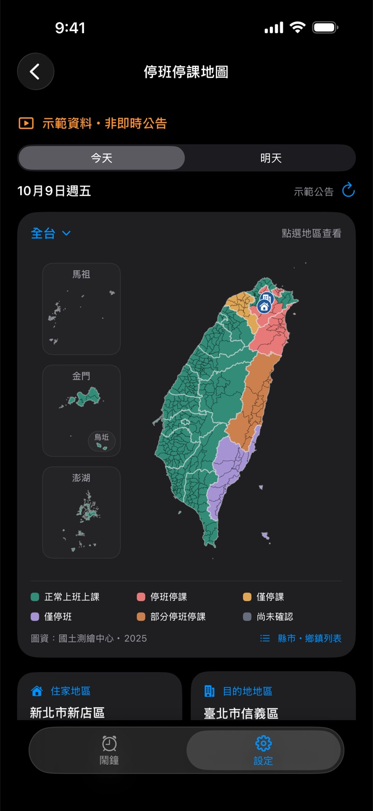
縣市政府宣布你住家或公司所在行政區全天或上午停班停課時，略過當天的鬧鐘；只停下午或晚上就照常響。可選只看停班、只看停課或兩者皆算。公告來自行政院人事行政總處的公開資料（經 NCDR 發布），App 會標示來源與更新時間；無法確認公告或沒有網路時，鬧鐘照常響。鄉鎮市區地圖涵蓋 22 縣市、368 鄉鎮市區，「查看地圖示範」不需購買。
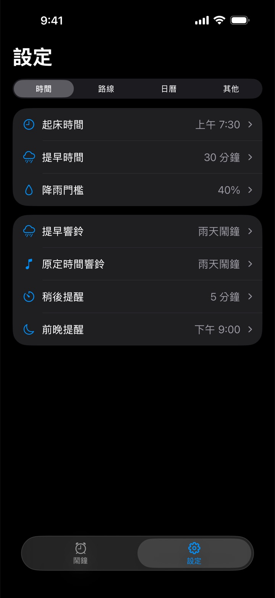
「提早時間」和「降雨門檻」各有獨立的設定畫面，都會顯示完整規則，例如「降雨達 40% 提早 30 分鐘」。選項改了就自動儲存，已排程的鬧鐘跟著更新。
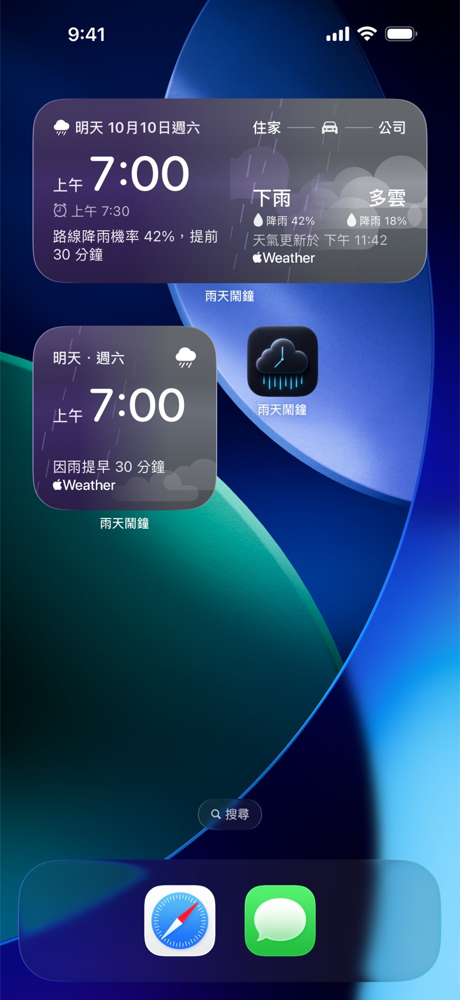
主畫面可放小型或中型小工具，也能加到鎖定畫面。顯示下次鬧鐘幾點響與原因：因路線可能下雨而提早，或因週末、假日、停班停課、手動設為安靜而略過。中型另外顯示住家與公司天氣。雨天鬧鐘每次檢查預報都會更新小工具。
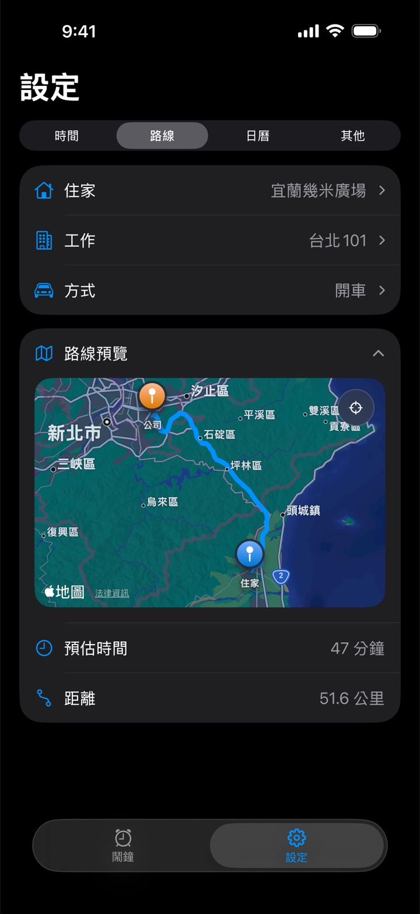
開車、騎車、步行或大眾交通，用 Apple 地圖預覽通勤路線。輸入地址時有建議清單，確認後就能排鬧鐘；不需要時可以收合地圖。
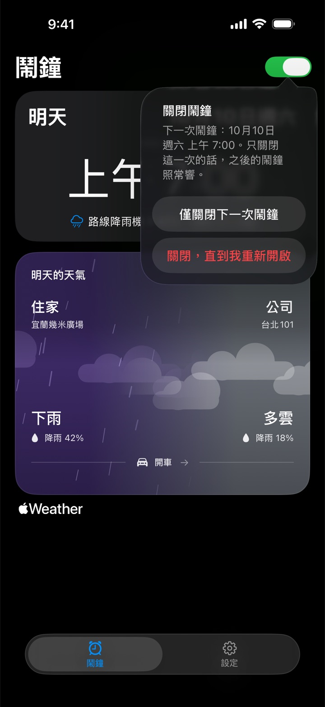
鬧鐘頁標題旁的開關：只關閉下一次鬧鐘（那次過後自動恢復），或關閉到你重新開啟為止。所有方案都能使用。
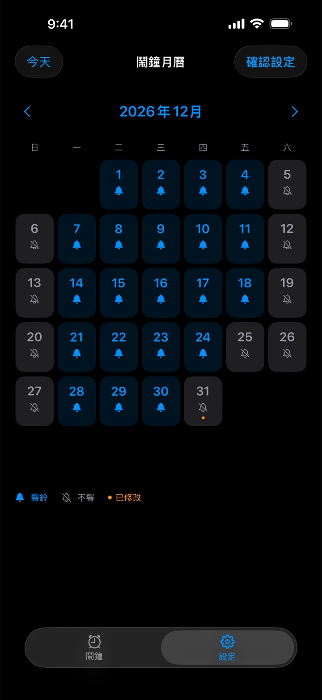
選台灣辦公日曆或美國聯邦假日（含標準補假日），在月曆裡查看整年的安排，點一下就能把某一天改成響或不響，手動設定優先。學校、公司的行事曆可能不同，可自行調整。
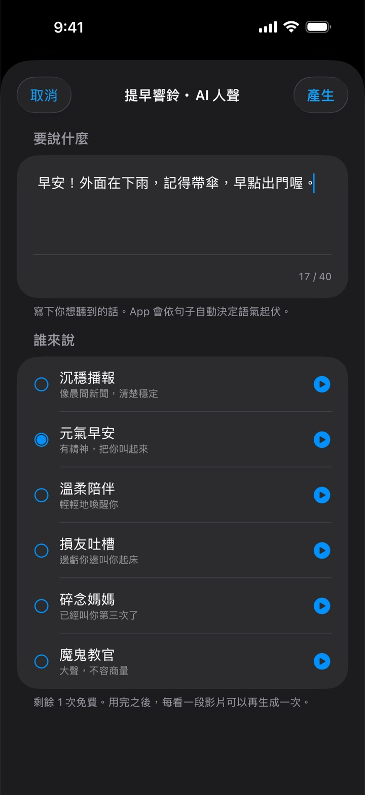
寫一句想聽的起床台詞，從六種 AI 人聲裡選一種，就能設成鬧鈴。每種聲音都可以先試聽，不需要網路。做好的鈴聲存在手機上，重播不扣次數。免費方案先送一次生成，之後每看完一段獎勵廣告可再生成一次；會員每天有一次免看廣告的生成。
iOS 26 以上用 AlarmKit 排程，鬧鐘像內建時鐘一樣穿透靜音與專注模式、全螢幕響鈴。iOS 17–25 以本機通知送達，會受靜音開關影響。
可開關，1 到 15 分鐘自選。iOS 26 以上，賴床倒數會顯示在鎖定畫面與動態島。
有鬧鐘的前一晚，在你選的時間通知你路上哪一段可能下雨、鬧鐘會不會提早，以及預報是什麼時候查的。
提早響鈴和原定時間響鈴可以分別選鈴聲，包含已存的 AI 人聲；內建鈴聲都能試聽，iOS 26 以上也能選系統預設鬧鈴。
響鈴前如果沒能用新預報重新確認（例如背景 App 重新整理關閉、低耗電模式、整晚關機），鬧鐘卡片和小工具會註明。
沒有 Email、沒有密碼。會員以 Apple 可驗證的 App 與購買資料認回；住家與公司地址用於 Apple 地圖與 Apple 天氣的查詢，不會傳到雨天鬧鐘自己的服務。
基本的雨天提早、鬧鐘開關、路線與鈴聲都免費。想要下面這些，選月訂閱或一次買斷都可以。
兩種方案都包含：
月訂閱在訂閱有效期間提供上述權益，會自動續訂，除非在 Apple 的訂閱設定取消；買斷一次付款即可持續使用，沒有定期扣款。價格與供應以你的 App Store 顯示為準。恢復購買與管理訂閱在「設定 › 其他 › 會員與方案」右上角的選單。
「提早時間」與「降雨門檻」分開設定，各自顯示完整規則；小工具不再因預報過了幾小時就顯示驚嘆號；響鈴前沒能重新確認天氣時，鬧鐘頁和小工具會註明；修正購買有效卻一直顯示「尚未確認你的方案」的情況。
颱風、天災停班停課規則（訂閱或買斷，限台灣）；鬧鐘頁的總開關，只關下一次或關到重新開啟；主畫面與鎖定畫面的「下次鬧鐘」小工具（iOS 26 以上）。
會員方案（月訂閱、買斷）；台灣辦公日曆與美國聯邦假日的日曆功能；設定分成時間、路線、日曆、其他；提早與原定響鈴可分別選鈴聲；輸入地址時的建議清單。
前一晚預告：前一晚就知道明早鬧鐘會不會提早。
AI 人聲鬧鈴：寫下想聽的話，選一個聲音。
整段通勤路線都查雨，不再只看住家和公司。
每個鬧鐘日依當天的預報各自決定；介面更新。
iOS 26 以上穿透靜音與專注模式；稍後提醒；設定變更自動同步到已排程的鬧鐘。
首次上架。
Every screen is a real capture of version 1.8.1, with no mock data. Features marked “Subscription or one-time purchase” need a paid plan; everything else is free.
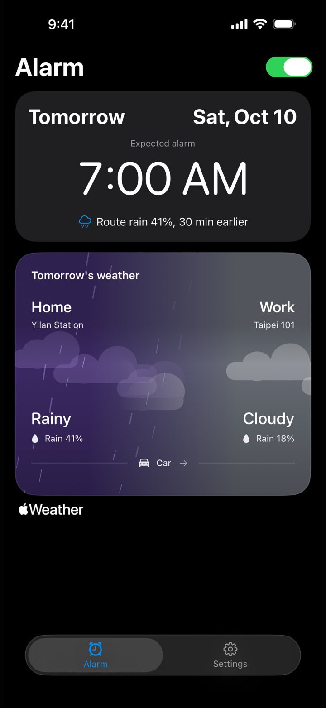
Set your home, your workplace and your usual wake-up time. Rainy Clock checks the Apple Weather forecast at points along your commute; when the rain chance reaches your threshold, the alarm rings earlier by the minutes you chose.
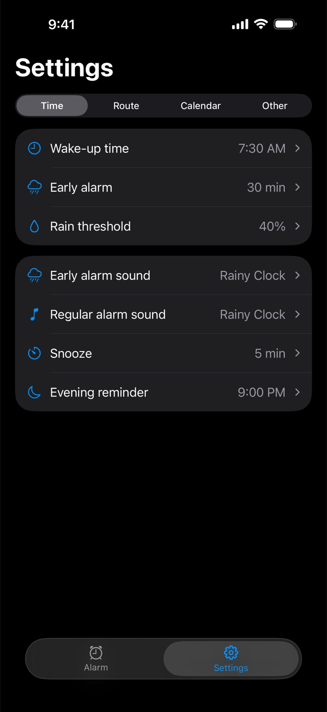
“Early alarm” and “Rain threshold” each open their own screen and show the whole rule, such as “At 40% rain, 30 min earlier”. Changes save automatically and the scheduled alarm follows.
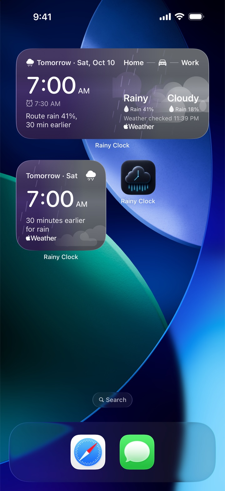
Add a small or medium widget to the Home Screen, or one to the Lock Screen. It shows when the next alarm rings and why: earlier for rain on your route, or skipped for a weekend, a holiday, a closure or a day you set to stay silent. The medium widget adds home and work weather. It updates whenever Rainy Clock checks the forecast.
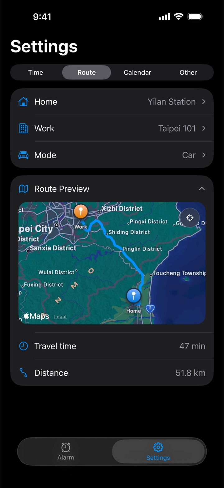
Drive, ride a scooter, walk or take public transit. Preview the route on Apple Maps, pick an address from the suggestions as you type, and collapse the map when you don't need it.
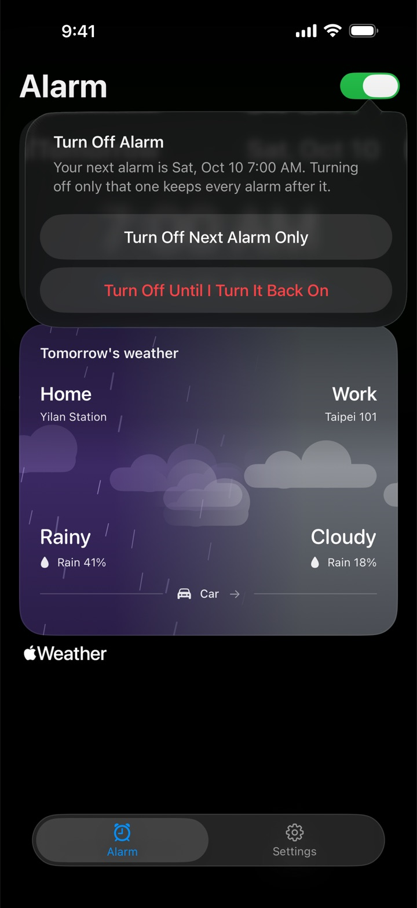
The switch next to the Alarm title turns off only the next alarm (it comes back on after that morning), or turns the alarm off until you turn it back on. Free on every plan.
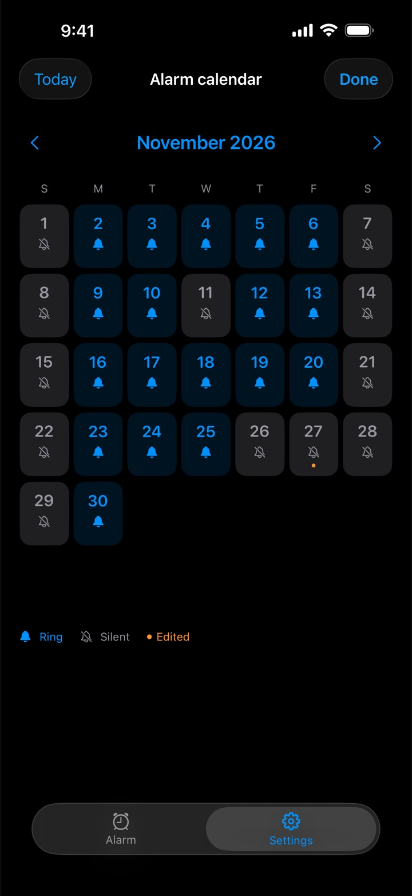
Choose US federal holidays with standard observed dates, or Taiwan office holidays. Browse the year a month at a time and tap any date to make it ring or stay silent; your manual choices always win. State, school and employer calendars may differ, so adjust as you like.
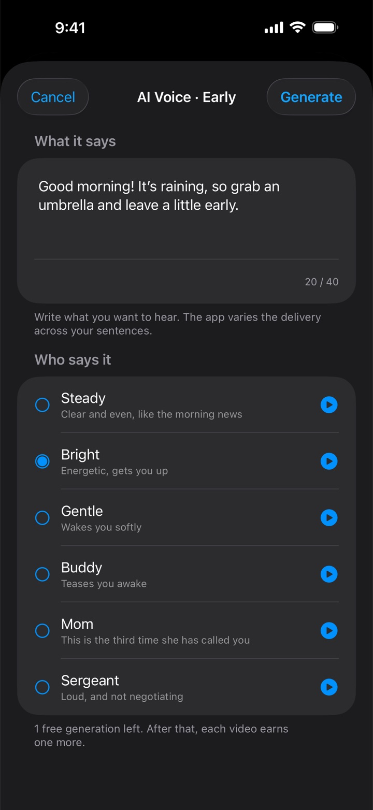
Write a short wake-up line, pick one of six AI voices and use it as your alarm sound. Previews are built in and work offline. Finished sounds stay on your phone, and replaying one costs nothing. The free plan includes one generation; each extra one takes a rewarded video ad. Members get one ad-free generation a day.
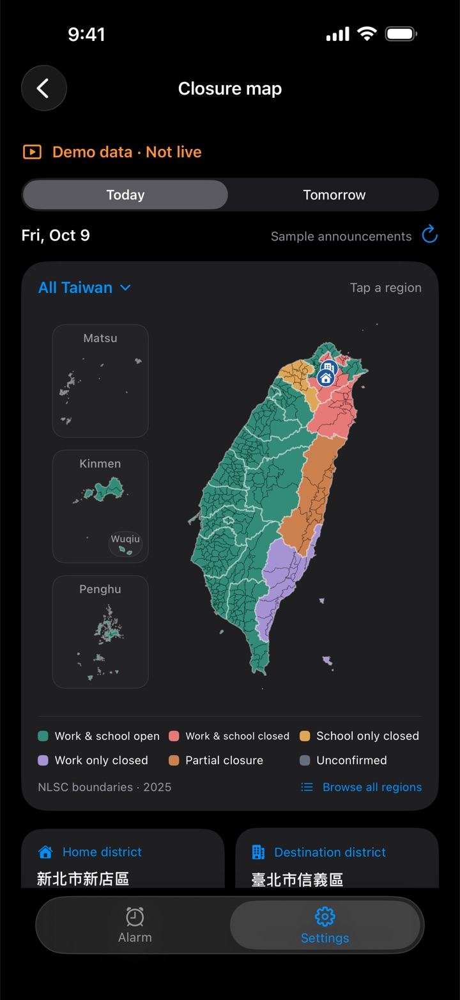
When a city or county government in Taiwan suspends work or school for the morning or all day in your home or workplace district, Rainy Clock skips that day's alarm. Choose work closures, school closures or both. Announcements come from the Directorate-General of Personnel Administration's public data via NCDR, with the source and update time shown; if none can be confirmed, the alarm rings as usual. The township map covers all 22 cities and counties, and “View map demo” works on any plan.
On iOS 26 and later the alarm is scheduled with AlarmKit, so it sounds through Silent mode and Focus with a full-screen alert, like the built-in Clock app. On iOS 17–25 it is a local notification and follows the silent switch.
On or off, 1 to 15 minutes. On iOS 26 and later the countdown shows on the Lock Screen and in the Dynamic Island.
The night before an alarm, at a time you choose, Rainy Clock tells you where rain is likely on your route, whether that moves the alarm, and when the forecast was checked.
Pick separate sounds for the early alarm and the regular one, including saved AI voices. Built-in sounds can be previewed, and iOS 26 adds the system default alarm tone.
If the weather couldn't be re-checked before today's alarm (Background App Refresh off, Low Power Mode, the phone off overnight), the Alarm tab and the widget say so.
No email, no password. Apple-verified app and purchase records recognize your membership. Your addresses go to Apple Maps and Apple Weather for lookups, never to Rainy Clock's own services.
The rain-aware alarm, the alarm switch, routes and sounds are free. For the rest, choose a monthly subscription or a one-time purchase.
Both plans include:
The monthly plan provides these benefits while it is active and renews automatically unless cancelled in Apple's subscription settings; the one-time purchase provides ongoing access with no recurring payment. Prices and availability come from your App Store. Restore purchases and Manage subscriptions are in Settings › Other › Membership & plans, top-right menu.
“Early alarm” and “Rain threshold” open separately and show the whole rule; the widget no longer warns just because the forecast is a few hours old; the Alarm tab and widget say when the weather couldn't be re-checked before today's alarm; fixed a case where a valid purchase kept showing “Your plan hasn't been confirmed yet”.
Typhoon and disaster closure rules for Taiwan (paid plans); the alarm switch, for one morning or until you turn it back on; the Next Alarm widget for the Home Screen and Lock Screen (iOS 26 or later).
Membership (monthly subscription or one-time purchase); holiday calendars for the US and Taiwan; Settings organized into Time, Route, Calendar and Other; separate sounds for early and regular alarms; address suggestions as you type.
Evening preview: know tonight what tomorrow's alarm will do.
AI voice alarm: write what it should say, pick a voice.
Rain checks along the whole route, not only at home and at work.
Each alarm morning decided on its own forecast; interface refresh.
Alarms sound through Silent mode and Focus on iOS 26; snooze; settings changes re-schedule the alarm automatically.
First App Store release.